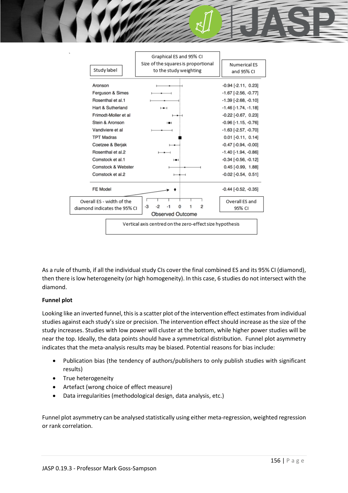

JASP_forest_plot
森林圖（Forest Plot）
JASP_lecture ←→ JASP_meta_analysis JASP_heterogeneity JASP_funnel_plot
對應統計概念
forest plot · meta-analysis · heterogeneity
用途
把每篇研究的 ES + 95% CI 繪在同一張圖，並在最下方顯示整體 pooled ES（菱形）。
元素拆解
| 元素 | 意義 |
|---|---|
| 方塊 | 各研究 ES |
| 方塊大小 | 研究權重（越大 = 樣本多 / SE 小） |
| 水平線 | 各研究 95% CI |
| 垂直線 | 無效應線（通常 0） |
| 菱形 | pooled ES + 95% CI |

視覺判讀
- 低異質：所有 CI 包含 pooled 菱形 → 研究結論一致
- 高異質：研究散布在垂直線兩側、CI 少重疊
- 個別研究 CI 不過 0：該研究單獨顯著
- 菱形不過 0：整體效應顯著
JASP 操作
Meta-Analysis > Classical Meta-Analysis → Forest Plot 區塊：
- 勾 Study information → 加 Author、Date 到 Selected variables
- 勾 Model information → 加上下方 pooled summary
延伸
- 整體流程：JASP_meta_analysis
- 異質性：JASP_heterogeneity
- 漏斗圖（發表偏誤）：JASP_funnel_plot